Slide 1 — Basic Knowledge
สถิติที่เราคุ้นเคยใช้ข้อมูลที่เก็บครั้งเดียวจากคนหลายคนซึ่งไม่เกี่ยวข้องกัน วิชานี้กลับใช้ข้อมูลที่เก็บจากสิ่งเดียวซ้ำไปตามเวลา ยอดขายของร้านเดิมทุกเดือน อุณหภูมิของโลกทุกปี ค่าวันนี้จึงมักมีร่องรอยของเมื่อวานติดมาด้วย บทนี้ปูพื้นสามเรื่องที่ทั้งวิชายืนอยู่บนนั้น คือการมองกราฟของข้อมูลตามเวลาให้ออก การมองแต่ละจุดเวลาเป็นตัวแปรสุ่มคนละตัวพร้อมเครื่องมือวัดว่าจุดเหล่านั้นเกี่ยวกันแค่ไหน และการหาค่าเฉลี่ยกับ autocovariance ของโมเดลง่าย ๆ ด้วยมือ เรื่องสุดท้ายนี้สำคัญเป็นพิเศษ เพราะข้อสอบปลายภาคภาคแรกเป็นความเข้าใจและการคำนวณ เช่น ให้โมเดลมาแล้วหา mean function กับ autocovariance ส่วนภาคที่สองเป็นการวิเคราะห์ข้อมูลจริงด้วย R ตั้งแต่ดูกราฟ เลือกโมเดล ตรวจโมเดล จนถึงพยากรณ์1 อาจารย์ยืนยันว่าข้อสอบช่วงต้นจะออกตามที่สอน คือมีโมเดลมาให้หาสองค่านี้2 ส่วนคะแนนเก็บของวิชาแบ่งเป็นโปรเจกต์หรือกรณีศึกษา 30% ควิซและการเข้าเรียน 30% (นับควิซ 3 ครั้งที่ดีที่สุด) และสอบปลายภาค 40% โดยไม่มีสอบกลางภาค3
ข้อมูลในสถิติทั่วไปเรียกว่า cross-sectional เขียนเป็น \(X_i\) โดย i คือหน่วยที่ 1, 2, …, n เช่น คนที่หนึ่ง คนที่สอง ส่วนอนุกรมเวลาเขียนเป็น \(X_t\) โดย t คือจุดเวลาที่ 1, 2, …, n ตัวห้อยต่างกันแค่ตัวอักษร แต่ความหมายต่างกันมาก4 วิธีแยกสองแบบที่ง่ายที่สุดคือลองสลับลำดับดู5 ถ้าสลับ \(X_1\) กับ \(X_3\) ในข้อมูล cross-sectional ผลวิเคราะห์ไม่เปลี่ยนเลย เพราะสองคนนั้นไม่เกี่ยวกัน สถิติเรียกสภาพนี้ว่าอิสระต่อกัน (independent) แต่ถ้าสลับยอดขายเดือนมกราคมกับมีนาคม เรื่องราวของข้อมูลเปลี่ยนไปทันที สไลด์นิยามอนุกรมเวลาว่าเป็นค่าที่ ordered และสังเกต ณ จุดเวลาที่ต่อเนื่องกัน ขณะที่ cross-sectional สังเกต ณ จุดเวลาเดียว (time is no significance) เทียบได้กับวิดีโอกับภาพถ่ายหมู่ วิดีโอสลับเฟรมแล้วเรื่องเพี้ยน ภาพหมู่จะให้ใครยืนตรงไหนก็ได้ข้อมูลเท่าเดิม
ความต่างอีกข้อคือรูปร่างของตาราง ข้อมูล cross-sectional มักมีหลายตัวแปร เช่น รายได้ อายุ และการศึกษาของคน 500 คน ส่วนอนุกรมเวลามักมีตัวแปรเดียว แต่มีจุดเวลามาก (usually at least 50) ตัวเลข 50 เป็นมาตรฐานทั่วไป ไม่ใช่ทฤษฎีบังคับ มี 30 จุดก็พอใช้ได้6 เหตุผลจะชัดใน Lesson 3 ซึ่งใช้เส้นขอบ \(2/\sqrt{n}\) ตัดสินว่าความสัมพันธ์ระหว่างจุดต่างจากศูนย์หรือไม่ ถ้า n = 50 เส้นอยู่ที่ 0.28 แต่ถ้า n = 20 เส้นถอยไปถึง 0.45 ข้อมูลน้อยจึงแยกความสัมพันธ์จริงออกจากความบังเอิญได้ยาก และเพราะค่าเปลี่ยนไปตามเวลา อนุกรมเวลาจึงถูกเรียกว่าข้อมูลแบบ dynamic
อนุกรมเวลาที่มีตัวแปรเดียว (univariate) มีลักษณะสามข้อ ข้อแรก วัด ณ เวลาที่กำหนดและโดยปกติห่างเท่ากัน เช่น ทุกเดือน ข้อนี้ต้องระวังในทางปฏิบัติ ข้อมูลรายวันทำการที่ข้ามเสาร์อาทิตย์ต้องจัดให้ห่างเท่ากันก่อน7 ข้อสอง เป็นการวัดตัวแปรเดียวกันซ้ำตามเวลา ข้อสาม ข้อมูลเรียงลำดับ และลำดับนี้ refers generally to time วิชานี้จำกัดขอบเขตไว้ที่อนุกรมซึ่งวัดจาก a single continuous random variable ที่ regular time periods. คำว่า single หมายถึงตัวแปรเดียว continuous หมายถึงค่าที่วัดเป็นทศนิยมได้ ข้อมูลที่นับเป็นจำนวนเต็มก็ถือเป็น continuous ในวิชานี้เพื่อความง่าย8 ส่วน discrete time หมายถึงเวลานับเป็นจุด ๆ เช่น ปี 1995, 1996
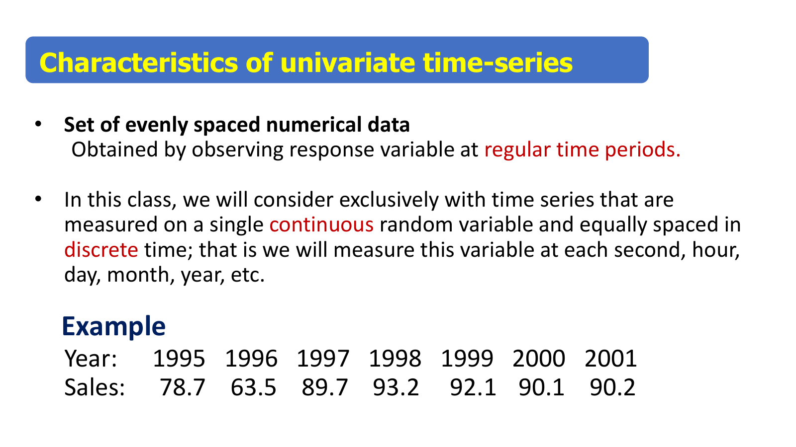
ตารางยอดขายนี้มีตัวแปรตัวเดียวคือ Sales คอลัมน์ Year ไม่ใช่ตัวแปร เป็นแค่ตัวบอกเวลา (time indicator) ค่า 78.7 คือ \(X_1\), 63.5 คือ \(X_2\), 89.7 คือ \(X_3\) ไล่ไปเรื่อย ๆ9 วิชานี้เริ่มนับที่ \(X_1\) ตามตำรา บางแหล่งเริ่มที่ \(X_0\) เรื่องนี้กลับมาสำคัญตอนทำ regression ใน Lesson 3 ซึ่งตัวแปรต้น t = 1, 2, 3 เป็นแค่ลำดับเวลา ไม่มีความหมายเชิงเหตุและผล ตัวเลขชุดนี้ยังแสดงให้เห็นว่าลำดับคือข้อมูล ยอดขายปี 1995–2001 คือ 78.7, 63.5, 89.7, 93.2, 92.1, 90.1, 90.2 อ่านได้ว่าตกหนักในปี 1996 แล้วฟื้นจนทรงตัวราว 90 ถ้าย้าย 63.5 ไปไว้ปี 2001 ตัวเลขชุดเดิมจะเล่าว่ายอดทรงตัวหลายปีแล้วร่วงในปีสุดท้าย ค่าเฉลี่ยและความแปรปรวนของสองแบบเท่ากันทุกประการ แต่การพยากรณ์ปี 2002 ต่างกันมาก
เมื่อเทียบกับตารางข้อมูลทั่วไปที่มีตัวแปรตาม \(Y\) และตัวแปรต้น \(X_1,\dots,X_p\) ซึ่งแต่ละแถวอิสระต่อกัน สไลด์เพิ่มคอลัมน์ TIME (DEPENDENCE) เพื่อบอกว่าแต่ละแถวขึ้นกับแถวก่อนหน้า วิธีสถิติที่สมมติว่าแถวอิสระจึงใช้ตรง ๆ ไม่ได้ และต้องมีเครื่องมือใหม่ที่วัดว่าค่าของตัวเองในเวลาหนึ่งเกี่ยวกับค่าในอีกเวลาหนึ่งมากเพียงใด เครื่องมือนั้นคือ autocovariance ในตอนที่ 4 อนุกรมที่จะเจอในวิชามีสี่ประเภท10 ประเภทแรกคือ univariate ซึ่งเรียนในครึ่งแรกของวิชา ประเภทที่สองคือหลายอนุกรมที่สำคัญเท่ากันและส่งผลถึงกัน ซึ่งคือโมเดล VAR ในบทท้าย ประเภทที่สามมี Y เป็นหลักและมีอนุกรม X อื่นช่วยให้พยากรณ์ Y แม่นขึ้น ซึ่งคือ ARIMAX ประเภทสุดท้ายคือ panel data ที่เก็บหลายหน่วยตามเวลา เป็น "หัวข้อใหญ่มาก" ที่อาจไม่ได้สอน มีสองจุดที่คนมักสับสน จุดแรก ใน univariate ต่อให้เขียนด้วยตัว X คอลัมน์เดียวนั้นก็คือตัวแปรตาม เพราะไม่มีตัวแปรต้นให้เทียบ11 จุดที่สอง panel ของ AIS, True และบริษัทที่สามที่เก็บปี 2000–2026 มี 3 observation โดยแต่ละ observation เก็บมา 26 ปี ไม่ใช่ 7812
กราฟเส้นที่มีจุดถี่แบบดัชนี S&P 500 นี้เรียกว่า time series plot ใช้ดูภาพรวมก่อน ยังไม่ได้ให้โมเดล13 แต่อ่านได้ถึงสามเรื่อง ปี 1965–1980 ค่าแกว่งอยู่ระหว่างประมาณ 60 ถึง 120 โดยไม่ขึ้นชัดเจน หลังปี 1982 ค่าเพิ่มเร็วจนถึงราว 350 ในปี 1990 และการแกว่งช่วงท้ายกว้างกว่าช่วงแรกมาก เช่น การร่วงในปี 1987 สามเรื่องนี้จะได้ชื่อเรียกในตอนที่ 2 และใช้เป็นวิธีอ่านกราฟทุกกราฟในวิชาได้ คือดูระดับกลางว่าเลื่อนตามเวลาไหม ดูรูปแบบที่ซ้ำเป็นจังหวะ ดูความกว้างของการแกว่ง และดูจุดผิดปกติ เช่น ค่าที่กระโดดออกไปครั้งเดียว (outlier) หรือระดับที่เปลี่ยนทันที (step change)
การวิเคราะห์อนุกรมเวลามีเป้าหมายสี่ข้อ ได้แก่ describe บรรยายลักษณะของรูปแบบ explain อธิบายว่าอดีตส่งผลต่ออนาคตอย่างไร หรืออนุกรมสองชุด “interact” กันอย่างไร forecast พยากรณ์ค่าในอนาคต และใช้เป็นมาตรฐานควบคุมคุณภาพการผลิต เช่น ถ้าน้ำหนักบรรจุภัณฑ์หลุดจากช่วงที่โมเดลคาดไว้ แปลว่าเครื่องผลิตเริ่มผิดปกติ คำว่า forecast มักใช้กับการพยากรณ์ไปในอนาคต ส่วน predict ใช้กว้างกว่า การพยากรณ์แบ่งเป็นระยะสั้น 1–2 จุดเวลา กับระยะยาว เช่น 10 เดือนข้างหน้า ธุรกิจส่วนใหญ่ใช้ระยะสั้น เพราะพยากรณ์สัปดาห์หน้าก็พอเตรียมสินค้าได้ทัน ส่วนภาครัฐที่ต้องการภาพอนาคตอาจใช้ระยะยาว14 ตอนที่ 5 จะพิสูจน์ว่าทำไมระยะสั้นจึงน่าเชื่อกว่า คือยิ่งพยากรณ์ไกล ความไม่แน่นอนยิ่งโต


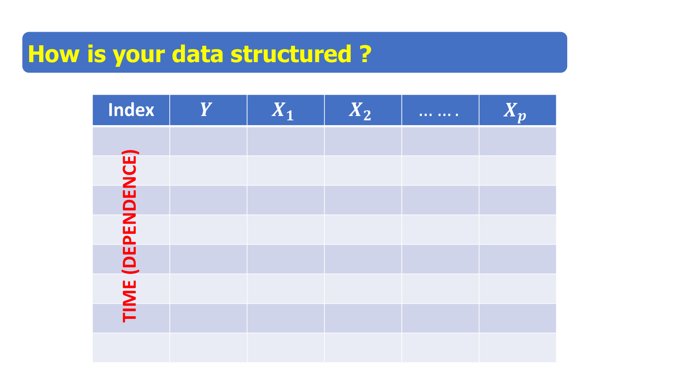

กราฟอนุกรมเวลาเส้นหนึ่งมักมีหลายอย่างซ้อนกัน แยกได้เป็นองค์ประกอบสามถึงสี่อย่าง และจัดเป็นสองกลุ่ม15 กลุ่มแรกคือ signal ซึ่งมีแบบแผนและอธิบายด้วยโมเดลได้ ได้แก่ trend, seasonal และ cycle กลุ่มที่สองคือ noise ซึ่งสุ่มและอธิบายไม่ได้ งานของทั้งวิชาคือแยกสองกลุ่มนี้ออกจากกัน เหมือนฟังวิทยุที่สัญญาณไม่ชัด เพลงคือ signal ที่ทายท่อนต่อไปได้ ส่วนเสียงซ่าคือ noise ที่ทายไม่ได้ บอกได้แค่ว่าดังประมาณไหน ลองนึกถึงร้านค้าร้านหนึ่ง ยอดขายโตขึ้นทุกปีคือ trend สูงทุกเดือนธันวาคมคือ seasonal ซบเซาเป็นช่วงหลายปีตามภาวะเศรษฐกิจคือ cycle และขึ้นลงรายวันโดยไม่มีเหตุผลชัดเจนคือ irregular

Trend คือค่าโดยเฉลี่ยที่มีแนวโน้มเพิ่มขึ้นหรือลดลงตามเวลา ต้องดูภาพรวม (overall) ไม่ใช่ทีละจุด และเริ่มจาก linear trend หรือเส้นตรงก่อน ข้อมูลที่ยาวมากอาจมีหลาย trend ผสมกัน16 ในกราฟบน น้ำหนักที่วัด 25 ครั้งเริ่มประมาณ 10.2 และจบประมาณ 10.9 ระหว่างทางมีช่วงลดลง เช่น จาก 10.7 ที่ครั้งที่ 6 เหลือ 10.4 ที่ครั้งที่ 7 แต่ระดับเฉลี่ยยังสูงขึ้น ส่วนกราฟล่าง ผู้เสียชีวิตต่อการขับรถ 100 ล้านไมล์ลดจากประมาณ 5.5 ในปี 1966 เหลือประมาณ 1.7 ในปี 1994 การลดลงชั่วคราวไม่ได้ลบล้าง trend เหมือนเดินขึ้นเขาที่มีทางลงสั้น ๆ เป็นช่วง ปลายทางก็ยังสูงกว่าต้นทาง
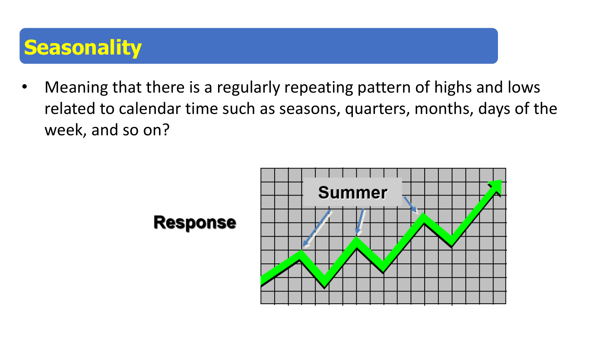
Seasonality คือรูปแบบสูงต่ำที่ซ้ำอย่างสม่ำเสมอและ related to calendar time คือผูกกับฤดู ไตรมาส เดือน หรือวันในสัปดาห์ ในกราฟนี้ยอดของทุกรอบตรงกับฤดูร้อน จึงทายตำแหน่งยอดล่วงหน้าได้ และยอดแต่ละรอบสูงกว่ารอบก่อน แปลว่ามี trend ขาขึ้นซ้อนอยู่ด้วย องค์ประกอบหลายอย่างอยู่ในเส้นเดียวกันได้ ตัวอย่างบนสไลด์คือยอดขายเสื้อกันหนาวที่สูงในฤดูหนาวเสมอ และเครื่องดื่มเย็นที่ขายดีในฤดูร้อน การใช้ไฟฟ้าก็เช่นกัน หน้าร้อนคนเปิดแอร์มาก จึงเกิดเป็นรอบทุกปี17 ข้อมูลไฟฟ้านี้กลับมาอีกใน Lesson 7
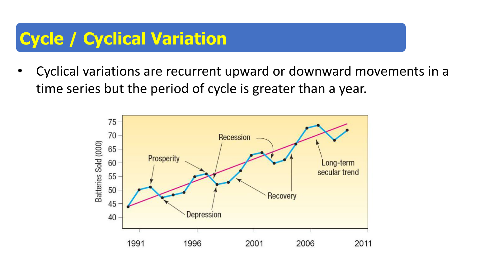
Cycle คือการขึ้นลงที่เกิดซ้ำเช่นกัน แต่ the period of cycle is greater than a year ยอดขายแบตเตอรี่ (พันก้อน) ปี 1991–2011 เพิ่มจากประมาณ 44 เป็น 72 เส้นตรงที่พาดขึ้นคือ trend ระยะยาว ส่วนข้อมูลจริงวนรอบเส้นนี้เป็นสี่ระยะ คือรุ่งเรือง (Prosperity) เมื่ออยู่เหนือเส้นจนถึงจุดสูงสุด ถดถอย (Recession) เมื่อเริ่มลดลง ตกต่ำ (Depression) เมื่ออยู่ใต้เส้นจนถึงจุดต่ำสุด และฟื้นตัว (Recovery) เมื่อกลับขึ้น หนึ่งรอบใช้เวลาหลายปีและไม่ได้เกิดในเดือนเดิมของทุกปี สไลด์ยกตัวอย่างแฟชั่นที่วนกลับมาทุก 3 ปี และของเสียที่เกิดซ้ำทุก 3 ชั่วโมง ตัวอย่างหลังมีรอบสั้นกว่าหนึ่งปี แต่ยังนับเป็น cycle เพราะเกิดตามจังหวะของเครื่องจักร ไม่ได้ผูกกับปฏิทิน ความต่างจาก seasonal คือ seasonal มองเป็นจุดที่ซ้ำ ส่วน cycle มองเป็นลอนที่ไกลกว่า18 cycle เป็นองค์ประกอบที่ยากที่สุด เพราะเปลี่ยนง่ายและต้องใช้ฟังก์ชันอย่าง sin กับ cos ส่วนใหญ่จึงไม่ model โดยตรง และวิชานี้เน้นมิติเวลา (time domain) มากกว่ามิติความถี่ (frequency domain)19
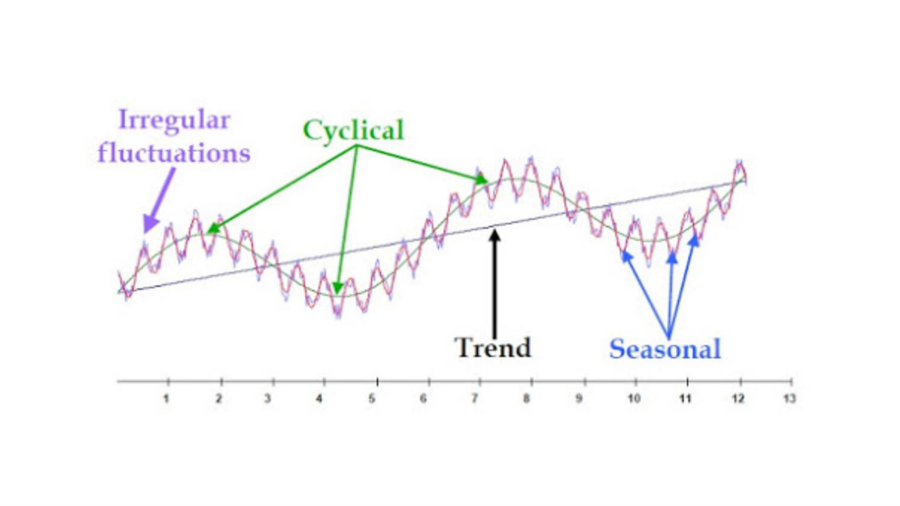
บนแกนเวลา 1 ถึง 13 องค์ประกอบทั้งสี่ซ้อนกันอยู่ และแยกออกจากกันได้ด้วยความยาวของรอบ trend คือเส้นตรงที่เอียงขึ้นตลอดช่วง cycle คือรอบที่ยาวที่สุดซึ่งต่ำสุดราวช่วง 4 ถึง 5 และสูงสุดราวช่วง 7 seasonal คือรอบสั้นที่ซ้ำถี่และสม่ำเสมอซ้อนบนคลื่นยาว ส่วน irregular คือรอยหยักเล็กที่ไม่มีแบบแผน Irregular เกิดจากเหตุไม่คาดคิด เช่น flood, war, earthquake, pandemic, famines สไลด์นิยามว่าเป็นส่วนที่ left over หลังนำ trend, seasonal และ cycle ออกแล้ว บางครั้งเรียกว่า “noise” ส่วนนี้มาจากปัจจัยที่ควบคุมไม่ได้หรือไม่ได้เก็บไว้ในข้อมูล ช่วง Covid-19 เป็นตัวอย่างที่ดี ทำโมเดลอย่างไรก็ยังมีส่วนนี้โผล่มา20 error ของอนุกรมเวลามีชื่อเฉพาะว่า white noise ซึ่งเป็นพระเอกของตอนที่ 421
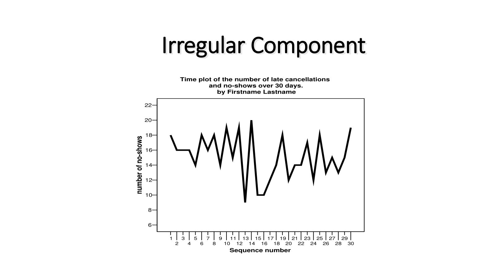
จำนวนผู้ยกเลิกนัดกะทันหันใน 30 วันนี้แกว่งระหว่าง 9 (วันที่ 13) ถึง 20 (วันที่ 14) สองวันติดกันต่างกันถึง 11 ถ้าลองหาแบบแผนจะพบว่าระดับกลางไม่ขึ้นไม่ลง ค่าแรกคือ 18 และค่าสุดท้ายคือ 19 ไม่มียอดที่ซ้ำทุก 7 วัน ไม่มีคลื่นยาว และความกว้างของการแกว่งพอ ๆ กันตลอด เมื่อหา trend, seasonal และ cycle ไม่เจอ สิ่งที่เห็นจึงเป็น irregular ล้วน ๆ
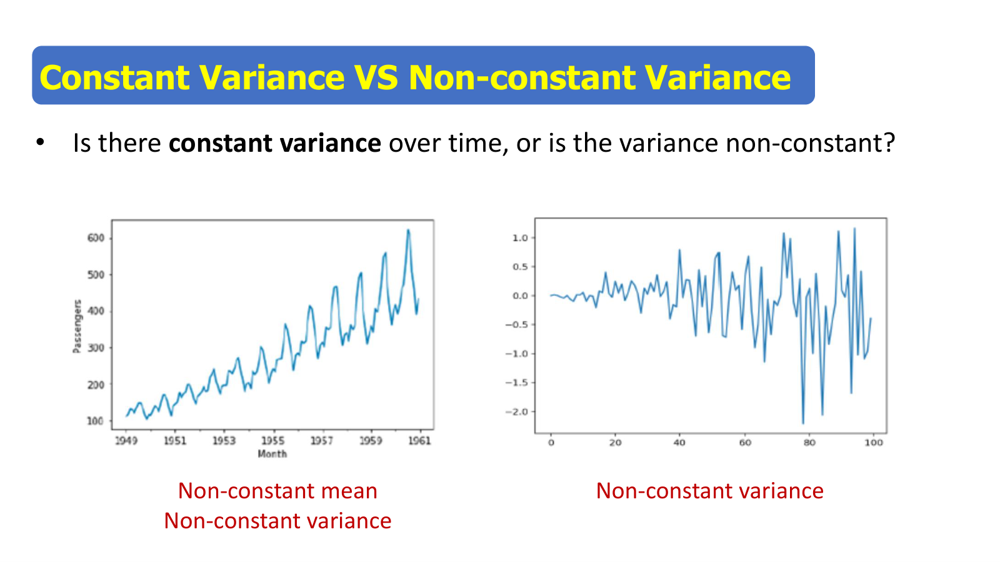
นอกจากสี่องค์ประกอบ ยังมีอีกเรื่องที่สำคัญมาก คือความแปรปรวนคงที่หรือไม่คงที่22 การแยก trend ทำได้หลายเทคนิค แต่การทำให้การแกว่งคงที่เป็นเงื่อนไขของเกือบทุกโมเดล23 ต้องแยกให้ออกว่า mean คือระดับกลางของเส้น ส่วน variance คือความกว้างของการแกว่งรอบระดับกลาง กราฟหนึ่งอาจมีปัญหาเรื่องเดียวหรือทั้งสองเรื่อง ผู้โดยสารสายการบินปี 1949–1961 มีระดับเฉลี่ยเพิ่มจากประมาณ 120 เป็น 450 และระยะจากยอดถึงท้องในแต่ละปีกว้างขึ้นจากประมาณ 40 เป็น 200 จึงเป็นทั้ง Non-constant mean และ Non-constant variance ส่วนกราฟที่สองมี 100 จุดที่แกว่งรอบ 0 ตลอด แต่ช่วงแรกแกว่งแคบประมาณ ±0.1 และช่วงท้ายแกว่งระหว่าง −2 ถึง 1 จึงมี mean คงที่แต่ variance ไม่คงที่
การแกว่งที่ไม่เท่ากันเป็นปัญหาเพราะเทียบได้กับ regression ความแปรปรวนคงที่คือ homoscedasticity และไม่คงที่คือ heteroscedasticity ถ้า residual ช่วงหลังแกว่งมากกว่าช่วงแรก แปลว่าโมเดลอธิบายช่วงหลังได้แย่กว่า ซึ่งเป็นสัญญาณของ lack of fit24 วิธีแก้ที่ใช้บ่อยที่สุดคือ take log เพื่อ "บีบ" ข้อมูล ซึ่งสอนเต็มใน Lesson 7 และความแปรปรวนของอนุกรมเวลามีอีกชื่อว่า volatility25 การ์ดข้างล่างแสดงว่าทำไม log จึงบีบได้พอดี
ปีแรกยอดอยู่ระหว่าง 90 ถึง 110 ปีที่สิบอยู่ระหว่าง 360 ถึง 440 ทั้งสองปีแกว่ง ±10% รอบระดับของตัวเอง
ปีแรก \(110-90=20\) ปีที่สิบ \(440-360=80\) ต่างกัน 4 เท่า variance จึงไม่คงที่
ปีแรก \(\ln110-\ln90=4.7005-4.4998=0.2007\) ปีที่สิบ \(\ln440-\ln360=6.0868-5.8861=0.2007\) เท่ากันพอดี
เมื่อมององค์ประกอบทั้งหมดรวมกัน แนวคิดของ decomposition คือแยกอนุกรมออกเป็น signal กับ noise แล้วใช้แต่ละส่วนคนละหน้าที่ signal ใช้พยากรณ์โดยยืดส่วนที่มีแบบแผนออกไปในอนาคต สไลด์เขียนว่า Forecast extrapolate signal portion of model ส่วน noise ทายไม่ได้ แต่ขนาดของมันบอกว่าค่าจริงจะคลาดจากค่าพยากรณ์ได้แค่ไหน จึงใช้สร้างช่วงความเชื่อมั่น Confidence interval account for uncertainty และเพราะไม่มีโมเดลไหนถูกต้องสมบูรณ์ ส่วน noise จึงมีอยู่เสมอ26 ถ้าให้ \(T_t\) คือ trend, \(S_t\) คือ seasonal และ \(E_t\) คือ error จะเขียน decomposition ได้สองแบบ แบบบวก (additive) คือ \(Y_t=T_t+S_t+E_t\) และแบบคูณ (multiplicative) คือ \(Y_t=T_t\times S_t\times E_t\) แบบคูณเปลี่ยนแปลงได้เร็วกว่า ถ้าอนุกรมไม่ได้แกว่งมากขึ้นตามเวลา แบบบวกจึงเหมาะกว่า27 ลองนึกถึง trend ที่ปีแรกอยู่ที่ 100 และปีที่สิบอยู่ที่ 400 ถ้าใช้แบบบวกด้วย S = +20 หน้าร้อนจะดันยอดเป็น 120 และ 420 คือเพิ่ม 20 หน่วยเท่ากันทุกปี แต่ถ้าใช้แบบคูณด้วย S = 1.2 จะได้ 120 และ 480 คือเพิ่ม 20 หน่วยในปีแรก แต่เพิ่มถึง 80 หน่วยในปีที่สิบ แบบบวกจึงให้ seasonal ขนาดคงที่ ส่วนแบบคูณให้ seasonal ที่โตตามระดับของ trend
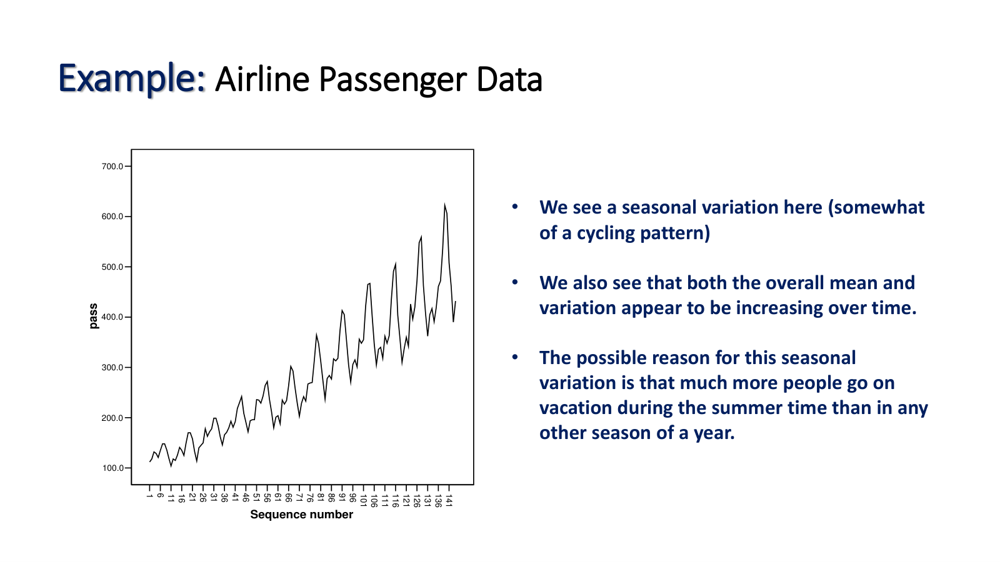
ข้อมูลผู้โดยสารสายการบิน 144 เดือน (ม.ค. 1949 ถึง ธ.ค. 1960) เป็นข้อมูลคลาสสิกในตำรา เพราะมีครบทั้ง trend, seasonal และ variance ที่เพิ่มขึ้น28 สไลด์สรุปว่า We see a seasonal variation here (somewhat of a cycling pattern) และ both the overall mean and variation appear to be increasing over time. โดยรูปแบบประจำฤดูเกิดเพราะ much more people go on vacation during the summer time ตัวเลขจริงยืนยันข้อสรุปนี้ ค่าต่ำสุดของทั้งชุดคือ 104 สูงสุดคือ 622 ความกว้างจากเดือนต่ำสุดถึงสูงสุดในปีแรกเท่ากับ 44 แต่ในปีสุดท้ายเท่ากับ 232 ยอดประจำฤดูกว้างขึ้นตามระดับ ข้อมูลนี้จึงเหมาะกับแบบคูณ เมื่อแยกด้วย R แบบคูณ ดัชนีของเดือนกรกฎาคมเป็น 1.227 คือสูงกว่าระดับ trend 22.7% ส่วนพฤศจิกายนเป็น 0.801 คือต่ำกว่า trend 19.9% ดัชนีสูงสุดอยู่ที่กรกฎาคมและสิงหาคม ตรงกับเรื่องวันหยุดหน้าร้อน ถ้าแยกแบบบวก กรกฎาคมจะได้ +63.83 คนต่อเดือน ซึ่งเป็นค่าเฉลี่ยของทุกปี จึงเกินจริงในปีแรกและต่ำกว่าจริงในปีท้าย วิธีคำนวณดัชนีเหล่านี้ทีละขั้นอยู่ใน Lesson 4
d <- decompose(AirPassengers, type = "multiplicative")
round(d$figure, 3)
plot(d)[1] 0.910 0.884 1.007 0.976 0.981 1.113 1.227 1.220 1.060 0.922 0.801 0.899
AirPassengers มีใน R อยู่แล้ว d$figure คือ seasonal index ของเดือนมกราคมถึงธันวาคมตามลำดับ
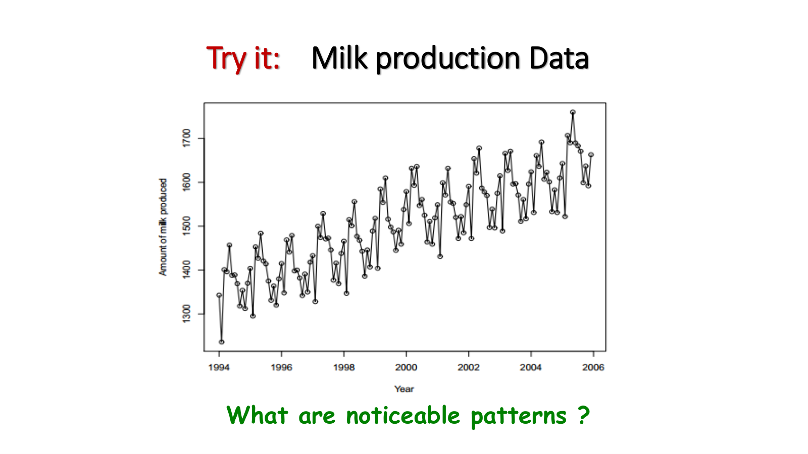
สไลด์ให้ลองตอบว่า What are noticeable patterns ? กับข้อมูลผลผลิตนม ระดับกลางเพิ่มจากประมาณ 1,300–1,400 ในปี 1994 เป็นประมาณ 1,600–1,750 ในปี 2006 จึงมี trend ขาขึ้น ยอดและท้องอยู่ตำแหน่งเดิมทุกปี จึงมี seasonal และความกว้างของการแกว่งแต่ละปีใกล้เคียงกันราว 150 ถึง 250 ความแปรปรวนจึงค่อนข้างคงที่ แบบบวกเหมาะกว่าแบบคูณ ข้อมูลนี้กลับมาอีกในบท SARIMA
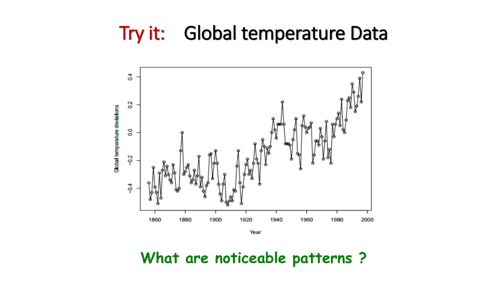
คำถามเดียวกัน What are noticeable patterns ? กับอุณหภูมิโลกรายปีให้คำตอบต่างออกไป ช่วง 1856–1920 ค่าอยู่ระหว่างประมาณ −0.5 ถึง −0.2 และแทบไม่เพิ่ม ช่วง 1920–1940 ขึ้นมาใกล้ 0 ช่วง 1940–1975 ค่อนข้างราบ และหลัง 1975 ขึ้นถึงราว 0.4 จึงมี trend ขาขึ้นที่ไม่เป็นเส้นตรง แต่ไม่มี seasonal ให้เห็น เพราะข้อมูลเป็นรายปี ส่วน seasonal ต้องวัดหลายครั้งภายในปี ข้อมูลนี้คือไฟล์ temp.txt ที่ใช้ใน Lesson 2, 3 และ 8
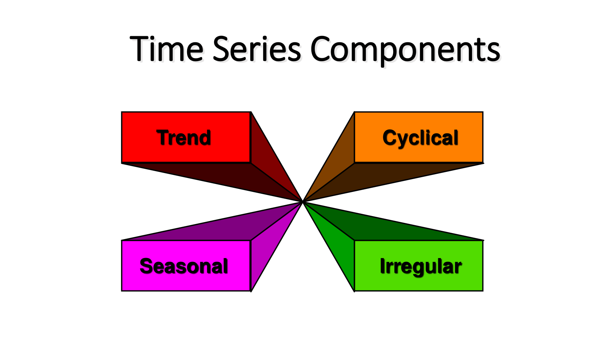

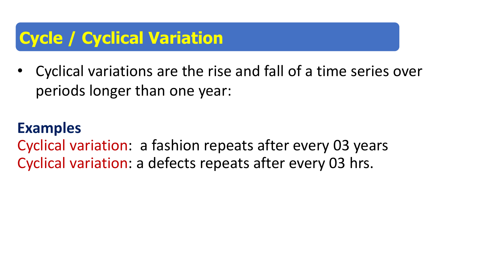
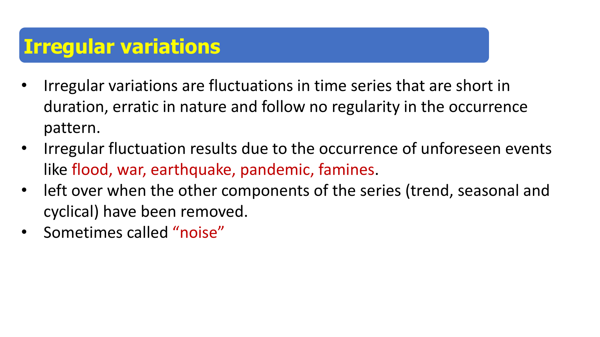

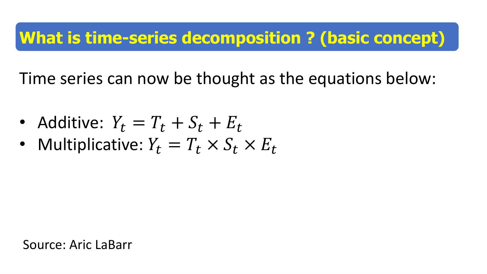
ครึ่งหลังของบทเปลี่ยนจากการดูกราฟมาเป็นการเขียนด้วยคณิตศาสตร์ ช่วงแรกของวิชาเป็นการปูพื้นที่ต้องใช้ความรู้สถิติ29 เพราะความยากของอนุกรมเวลาอยู่ที่แต่ละจุดเป็นตัวแปรสุ่ม และจุดเหล่านั้นสัมพันธ์กัน30 ตัวแปรสุ่มคือตัวแปรที่รับค่าตามผลของการทดลองสุ่ม ค่าของมัน can not be predicted with certainty แต่แปรผันตาม probability distribution. แต้มลูกเต๋าเป็นตัวอย่างที่ดี เราไม่รู้ว่าครั้งหน้าจะออกแต้มอะไร แต่รู้ว่าแต่ละแต้มมีโอกาส 1 ใน 6 ในวิชานี้ "การทดลองสุ่ม" ก็คือการเก็บข้อมูลนั่นเอง31 และ distribution คือนิสัยของตัวแปรสุ่มว่าเคลื่อนที่อย่างไร ซึ่งดูได้จาก histogram32
ตัวเลขที่ใช้บรรยายตัวแปรสุ่มมีสองตัวหลัก คือ Expectation and Variance ค่าเฉลี่ยของตัวแปรสุ่มต่อเนื่องคือ \(\mu=E(X)=\int x f_X(x)\,dx\) และความแปรปรวนคือ \(\mathrm{Var}(X)=E(X-\mu)^2\) ซึ่งเขียนเป็นสูตรลัดได้ว่า \(\mathrm{Var}(X)=E(X^2)-[E(X)]^2\) ลูกเต๋าหนึ่งลูกมี \(E(X)=21/6=3.5\) และ \(E(X^2)=91/6=15.167\) ความแปรปรวนจึงเป็น \(15.167-12.25=2.917\) ในชีวิตจริงเราไม่รู้ \(f(x)\) จึงต้องประมาณจากข้อมูลด้วยค่าเฉลี่ยตัวอย่าง \(\bar x=\sum x_i/n\) และความแปรปรวนตัวอย่าง \(s^2=\sum(x_i-\bar x)^2/(n-1)\) หลักสัญลักษณ์ที่ใช้ตลอดวิชาคือตัวกรีกแทนค่าจริงที่ไม่รู้ (parameter) และตัวอังกฤษหรือตัวที่สวมหมวกแทนค่าที่ประมาณจากข้อมูล (statistic)33 เช่น \(\rho(h)\) คือค่าจริง ส่วน \(\hat\rho(h)\) คือค่าที่คำนวณจากข้อมูล
เมื่อมีตัวแปรสองตัว เครื่องมือที่ใช้คือ Covariance and Correlation ลองดูนักเรียนสามคนที่ได้คะแนนคณิต 2, 4, 6 และคะแนนวิทย์ 1, 3, 5 ค่าเฉลี่ยของสองวิชาคือ 4 และ 3 แต่ละคนห่างจากค่าเฉลี่ยของวิชาตัวเองเป็น −2, 0, +2 ทั้งสองวิชา คูณส่วนต่างของคนเดียวกันได้ 4, 0, 4 แล้วเฉลี่ยได้ 8/3 ผลเป็นบวกเพราะคนที่คณิตต่ำ วิทย์ก็ต่ำ (ลบคูณลบได้บวก) และคนที่คณิตสูง วิทย์ก็สูง นี่คือสิ่งที่นิยาม \(\mathrm{cov}(X,Y)=E[(X-\mu_X)(Y-\mu_Y)]=E(XY)-E(X)E(Y)\) ทำ ค่าบวกแปลว่าไปทางเดียวกัน ค่าลบแปลว่าสวนทาง แต่ covariance บอกได้แค่ทิศทาง บอกความแรงไม่ได้ เพราะขนาดขึ้นกับหน่วย34 ค่าจึงอยู่ได้ตั้งแต่ลบอนันต์ถึงบวกอนันต์ คำตอบที่ผิดบ่อยคือช่วง −1 ถึง 1 ซึ่งที่จริงเป็นช่วงของ correlation35 correlation คือ covariance ที่หารด้วยส่วนเบี่ยงเบนมาตรฐานของทั้งสองตัว \(\rho=\mathrm{cov}(X,Y)/(\sigma_X\sigma_Y)\) เป็น "standardized version ของ covariance" ที่ไม่มีหน่วย และแปลงได้ทางเดียว คือจาก covariance ไป correlation ได้ แต่ถ้ารู้แค่ correlation จะแปลงกลับไม่ได้ เพราะไม่รู้ส่วนเบี่ยงเบนมาตรฐาน36
เรื่องที่เคยออกข้อสอบคือ ถ้า X กับ Y อิสระต่อกัน แล้ว \(\mathrm{cov}(X,Y)=0\)37 เพราะความเป็นอิสระทำให้ \(E(XY)=E(X)E(Y)\) และเมื่อแทนในสูตรก็เหลือ 0 แต่ส่วนกลับไม่จริงเสมอ (converse is not necessary true ) ตัวอย่างค้านคือให้ X มีค่า −1, 0, 1 ด้วยโอกาสเท่ากัน และ \(Y=X^2\) จะได้ \(E(X)=0\) และ \(E(XY)=E(X^3)=(-1+0+1)/3=0\) covariance เป็น 0 ทั้งที่ Y ถูกกำหนดจาก X ทั้งหมด เพราะ covariance วัดเฉพาะความสัมพันธ์เชิงเส้น ความสัมพันธ์แบบโค้งตัวยูจึงหลุดไป
การคำนวณตลอดวิชาใช้กฎหกข้อ โดยให้ a, b เป็นค่าคงที่ หัวใจของทุกข้อคือดึงสัมประสิทธิ์ออก แล้วคูณกระจายทีละคู่โดยพาเครื่องหมายไปด้วย38 กฎทั้งหกคือ \(E(aX+bY)=aE(X)+bE(Y)\), \(\mathrm{Var}(aX)=a^2\mathrm{Var}(X)\) ซึ่งค่าคงที่ที่ดึงออกมาต้องยกกำลังสอง, \(\mathrm{Var}(X+Y)=\mathrm{Var}(X)+\mathrm{Var}(Y)+2\mathrm{Cov}(X,Y)\), \(\mathrm{Cov}(X,a)=0\) เพราะค่าคงที่ไม่แกว่งจึงไม่แปรร่วมกับอะไร, \(\mathrm{Cov}(aX,bY)=ab\,\mathrm{Cov}(X,Y)\) และ \(\mathrm{Cov}(X,X)=\mathrm{Var}(X)\) สไลด์หน้า 29 ให้โจทย์ฝึกไว้หกข้อโดยไม่มีเฉลย

กฎข้อ 1: \(2E(X)+3E(Y)\)
กฎข้อ 2: \(3^2V(X)=9V(X)\) ไม่ใช่ \(3V(X)\)
กฎข้อ 3: \(V(X)+V(Y)+2\mathrm{Cov}(X,Y)\) ถ้าอิสระต่อกันเหลือ \(V(X)+V(Y)\)
3 เป็นค่าคงที่ กฎข้อ 4 ให้ \(0\)
กระจายทีละคู่: \(\mathrm{Cov}(2X,2Z)+\mathrm{Cov}(-3Y,2Z)=4\mathrm{Cov}(X,Z)-6\mathrm{Cov}(Y,Z)\)
สองตัวคูณสองตัวได้ 4 คู่: \(4\mathrm{Cov}(X,Z)-10\mathrm{Cov}(X,W)+6\mathrm{Cov}(Y,Z)-15\mathrm{Cov}(Y,W)\)
\(\mathrm{Cov}(2X,Z)+\mathrm{Cov}(2X,2W)-\mathrm{Cov}(Y,Z)-\mathrm{Cov}(Y,2W)=2\sigma_{XZ}+4\sigma_{XW}-\sigma_{YZ}-2\sigma_{YW}\)39
ทำไมต้องทบทวนเรื่องเหล่านี้ คำตอบอยู่ที่นิยามของอนุกรมเวลา ลำดับของตัวแปรสุ่ม \(\{X_t:t=1,2,\dots,n\}\) เรียกว่า stochastic process \(X_1\) คือค่าที่เวลา 1, \(X_2\) คือค่าที่เวลา 2 ในสถิติทั่วไป \(x_1,\dots,x_n\) มาจากตัวแปรสุ่มตัวเดียวกัน แต่ในอนุกรมเวลา แต่ละจุดเป็นตัวแปรสุ่มคนละตัว จึงมีตัวแปรสุ่มถึง n ตัว40 ให้นึกถึงลูกเต๋า n ลูกเรียงกันลูกละหนึ่งเวลา แต่ละลูกอาจถ่วงน้ำหนักไม่เหมือนกัน ข้อมูลที่เห็นคือแต้มที่ออกมาหนึ่งชุด ถ้าย้อนเวลาไปทอยใหม่จะได้อีกชุดหนึ่ง แต่เวลาย้อนไม่ได้ ข้อมูลจึงมีชุดเดียว ความยากของวิชาคือต้องเรียนรู้ลักษณะของลูกเต๋าทั้ง n ลูกจากการทอยเพียงครั้งเดียว ยิ่งไปกว่านั้น ข้อมูลอนุกรมเวลาแทบทุกชุดเป็น autocorrelated. คือสัมพันธ์กับตัวเอง ค่า S&P 500 ปี 1983 ใกล้ค่าปี 1982 มากกว่าค่าปี 1965 เราจึงเลือกได้สองทาง ทางแรกคือใช้ประโยชน์จากความสัมพันธ์นั้น (exploit) เพื่อพยากรณ์ ทางที่สองคืออย่างน้อยต้องรับมือ (cope) เพราะวิธีที่สมมติว่าข้อมูลอิสระต่อกันจะให้ผลผิดถ้ามองข้าม
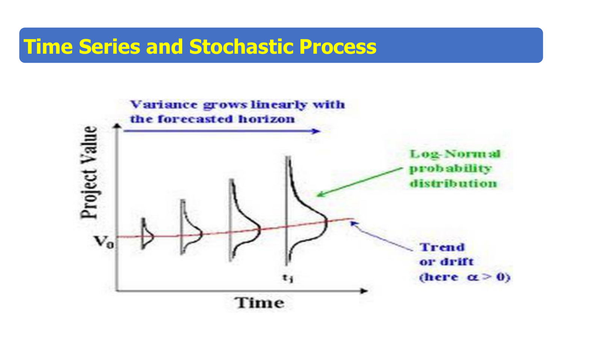
ภาพนี้แสดงความหมายของการมองแต่ละจุดเป็นตัวแปรสุ่ม จุดเริ่มต้น \(V_0\) เป็นค่าที่รู้แน่นอน แต่ค่าที่เป็นไปได้ในแต่ละเวลาถัดไปกระจายเป็นก้อนการแจกแจงหนึ่งก้อน ศูนย์กลางของก้อนเลื่อนขึ้นตาม trend และ variance grows linearly with the forecasted horizon ยิ่งมองไกล ก้อนยิ่งกว้าง ความไม่แน่นอนยิ่งมาก นี่คือเหตุผลเชิงทฤษฎีที่ธุรกิจชอบพยากรณ์ระยะสั้น และเป็นผลเดียวกับที่ตอนที่ 5 จะพิสูจน์ว่า random walk มีความแปรปรวน \(t\sigma_w^2\) ซึ่งโตเป็นเส้นตรงตามเวลา
การบรรยายอนุกรมให้ครบสมบูรณ์ต้องรู้การแจกแจงร่วมของ \((X_1,\dots,X_n)\) ทุกชุด คือรู้ \(P(X_1\le x_1,\dots,X_n\le x_n)\) ทุกค่า x และทุก n ซึ่งเท่ากับต้องรู้โอกาสของทุกเส้นทางที่ข้อมูลเป็นไปได้ สิ่งนี้มากเกินกว่าจะหาได้จากข้อมูลชุดเดียว ทางออกคือระบุเฉพาะ only the first and second-ordered moments คือ \(E(X_t)\) และ \(E(X_tX_{t-k})\) เพราะข้อมูลสำคัญส่วนใหญ่ของอนุกรมอยู่ใน first and second moments moment อันดับหนึ่งให้ค่าเฉลี่ย ส่วนอันดับสองให้ความแปรปรวนเมื่อ k = 0 และให้ covariance เมื่อ k ≥ 1 เหมือนการบรรยายคนด้วยส่วนสูงกับน้ำหนัก ไม่ครบทุกรายละเอียด แต่พอแยกคนส่วนใหญ่ออกจากกันได้


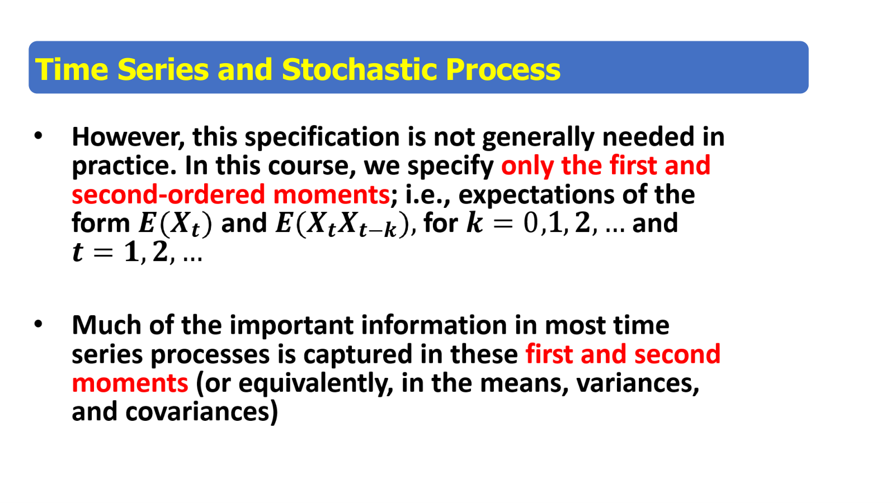
คำว่า auto แปลว่าตัวเอง covariance ในตอนที่แล้วเทียบตัวแปรสองตัว X กับ Y แบบข้อมูล cross-sectional แต่อนุกรมเวลามีตัวแปรเดียว เราจึงเทียบตัวมันเองที่เวลาต่างกัน autocovariance จึงแปลว่าความแปรปรวนร่วมในตัวมันเอง41 ก่อนถึงนิยามนี้มี mean function \(\mu_t=E(X_t)\) ซึ่งเป็นค่าเฉลี่ยทางทฤษฎีที่เวลา t มีตัวห้อย t เพราะแต่ละเวลาอาจมีค่าเฉลี่ยไม่เท่ากัน ข้อมูลที่มี trend ขาขึ้นมี \(\mu_t\) เพิ่มตามเวลา ส่วนข้อมูลที่แกว่งรอบระดับเดิมมี \(\mu_t\) คงที่ ความต่างนี้คือเกณฑ์ข้อแรกของ stationarity ใน Lesson 2
Autocovariance function คือ \(\gamma(s,t)=\mathrm{cov}(X_s,X_t)=E[(X_s-\mu_s)(X_t-\mu_t)]=E(X_sX_t)-\mu_s\mu_t\) เขียนเป็น \(\gamma_{s,t}\) ก็ได้ เช่น \(\gamma(1,5)\) คือความสัมพันธ์ระหว่างเดือนมกราคมกับพฤษภาคม42 ถ้า s = t ก็ได้ \(\gamma(t,t)=\mathrm{Var}(X_t)\) ตามกฎข้อสุดท้าย และค่าบวกแปลว่าถ้าเวลา s สูงกว่าค่าเฉลี่ย เวลา t ก็มักสูงกว่าค่าเฉลี่ยด้วย วิธีเขียนที่ง่ายกว่าคือสนใจแค่ว่าสองจุดห่างกันเท่าไร ไม่ต้องสนใจว่าเป็นจุดเวลาใด43 เราจึงเขียนคู่ \(X_t\) กับ \(X_{t+h}\) โดยเรียกระยะห่าง h ว่า lag ซึ่งต่ำสุดคือ 0 และ \(\gamma(0)=\mathrm{Var}(X_t)\) lag h ไม่ได้หมายถึงระยะห่างจากวันแรก และไม่ได้หมายถึงแค่ค่าก่อนหน้าตัวเดียว แต่หมายถึงทุกคู่ในข้อมูลที่ห่างกัน h ช่วง การเขียนแบบนี้ใช้ได้เต็มที่เมื่อ covariance ขึ้นกับระยะห่างอย่างเดียว ซึ่งคือนิยามของ stationarity ใน Lesson 2
Autocorrelation function หรือ ACF คือ \(\rho(s,t)=\gamma(s,t)/\sqrt{\gamma(s,s)\,\gamma(t,t)}\) คือ autocovariance ที่หารด้วยส่วนเบี่ยงเบนมาตรฐานของทั้งสองเวลา ค่าจึงอยู่ระหว่าง −1 ถึง 1 ค่าใกล้ ±1 บอก strong linear dependence ค่าใกล้ 0 บอกความสัมพันธ์เชิงเส้นที่อ่อน และค่าเท่ากับ 0 คือ uncorrelated เมื่อเขียนด้วย lag และความแปรปรวนเท่ากันทุกเวลา ตัวหารคือ \(\sqrt{\gamma(0)\gamma(0)}=\gamma(0)\) สูตรจึงย่อเหลือ
\(\rho(h)=\dfrac{\gamma(h)}{\gamma(0)}\)
สูตรนี้เป็นสูตรแรกในหนังสือที่ต้องจด และใช้ได้กับทุกอนุกรมเวลา44 ผลที่ตามมาทันทีคือ \(\rho(0)=1\) เสมอ เพราะเป็นตัวแปรเดียวกัน45 โจทย์ที่ให้หา ACF จึงเริ่มจากหา \(\gamma(h)\) ทุก lag แล้วหารด้วย \(\gamma(0)\) ตัวอย่างที่ง่ายที่สุดคือ \(X_t=5+w_t\) เมื่อ \(w_t\) อิสระต่อกัน มีค่าเฉลี่ย 0 และความแปรปรวน 4 ค่าเฉลี่ยคือ \(5+0=5\) ทุกเวลา \(\gamma(0)=\mathrm{Var}(5+w_t)=4\) เพราะการบวกค่าคงที่ไม่เปลี่ยนการแกว่ง และ \(\gamma(h)=\mathrm{cov}(w_t,w_{t+h})=0\) เมื่อ h ≠ 0 เพราะอิสระต่อกัน ACF จึงเป็น 1 ที่ lag 0 และเป็น 0 ที่ lag อื่นทั้งหมด
ตัว \(w_t\) ในตัวอย่างนั้นคือ white noise ซึ่งเป็นอนุกรมเวลาตัวแรกที่ต้องรู้ จุดเด่นคือไม่มีแบบแผนอะไรเลย46 ฟังดูไม่น่าสนใจ แต่ทุกโมเดลในวิชาสร้างจากมัน MA คือผลรวมของ white noise, AR คือค่าในอดีตบวก white noise และเมื่อสร้างโมเดลเสร็จ สิ่งที่เหลือก็ควรเป็น white noise ชื่อนี้จำได้ง่ายจากหนังสยองขวัญเรื่อง White Noise ที่เสียงซ่าจากวิทยุแกว่งแบบสุ่ม white noise ก็คือ "การแกว่งแบบ random"47 นิยามแรกบนสไลด์บอกว่า white noise คือกลุ่มของตัวแปรสุ่มที่ uncorrelated มีค่าเฉลี่ย 0 และความแปรปรวน \(\sigma_w^2\) เขียนย่อว่า \(w_t\sim wn(0,\sigma_w^2)\) ส่วนนิยามที่เข้มกว่าบอกว่าเป็นลำดับที่ independent and identically distributed (iid) โดย \(\sigma_w^2\) เป็นค่าคงที่ ( free of 𝑡 )48 คำว่า identically distributed แปลว่าทุกเวลามีการแจกแจงเดียวกัน ต่างจากอนุกรมทั่วไปที่ \(X_1\) กับ \(X_5\) อาจมีการแจกแจงต่างกัน และคำว่า independent เข้มกว่า uncorrelated เพราะ uncorrelated ห้ามแค่ความสัมพันธ์เชิงเส้น แต่ independent ห้ามทุกรูปแบบ ถ้าการแจกแจงเป็นแบบปกติ จะเขียนว่า \(w_t\sim iid\ N(0,\sigma_w^2)\) และเรียกว่า Gaussian white noise ตำราใช้แบบนี้เพราะง่าย49 แต่การแจกแจงแบบอื่นก็เป็น white noise ได้ เช่น \(w_t\sim iid\ t_{df=3}\) ซึ่งหางหนากว่าและมีค่าโดดบ่อยกว่า ตราบใดที่ค่าเฉลี่ยเป็น 0 ความแปรปรวนคงที่ และอิสระต่อกัน

white noise สองชุดนี้มีรูปแบบเหมือนกัน ต่างกันที่สเกล วิธีอ่านคือใช้กฎของการแจกแจงปกติ ภายใน ±1 ส่วนเบี่ยงเบนมาตรฐานมีข้อมูลราว 68% ภายใน ±2 มีราว 95% และภายใน ±3 มีราว 99.7%50 ชุดบนมี \(\sigma_w^2=1\) หรือส่วนเบี่ยงเบนมาตรฐาน 1 ค่าส่วนใหญ่จึงอยู่ระหว่าง −2 ถึง 2 ชุดล่างมี \(\sigma_w^2=36\) หรือส่วนเบี่ยงเบนมาตรฐาน 6 ค่าส่วนใหญ่จึงอยู่ระหว่าง −12 ถึง 12 ความแปรปรวนเปลี่ยนแค่ความกว้าง ไม่ได้สร้างแบบแผนใหม่
autocovariance ของ white noise ได้มาจากสองเหตุผลที่ต่างกัน เมื่อเป็นเวลาเดียวกัน \(\mathrm{cov}(w_t,w_t)=\mathrm{Var}(w_t)=\sigma_w^2\) ข้อนี้เป็นความจริงทางคณิตศาสตร์ เพราะ covariance ของตัวเองกับตัวเองคือความแปรปรวน เมื่อเป็นคนละเวลา \(\mathrm{cov}(w_t,w_s)=0\) ข้อนี้มาจากนิยาม เพราะเรากำหนดให้ white noise อิสระต่อกัน ให้นึกว่า white noise คือลูกเต๋าลูกใหม่ที่ทอยทุกวัน ลูกเต๋าวันนี้ไม่รู้เรื่องของเมื่อวานเลย ถ้ามันสัมพันธ์กับเมื่อวาน แปลว่ามีแบบแผนให้ทาย และแบบแผนนั้นควรไปอยู่ในโมเดลแทน ผลคือ \(\gamma(h)=\sigma_w^2\) เมื่อ h = 0 และ \(\gamma(h)=0\) เมื่อ h ≠ 0 แทนในสูตร ACF ได้ \(\rho(0)=1\) และ \(\rho(h)=0\) เมื่อ h ≠ 0 ผลนี้ไม่ขึ้นกับ t จึงเป็นตัวอย่างแรกของอนุกรมที่ stationary กฎสั้น ๆ ที่ใช้ในทุกการพิสูจน์ของวิชาคือ \(\mathrm{cov}(w_i,w_j)=\sigma_w^2\) ถ้า \(i=j\) และเป็น 0 ถ้า \(i\ne j\) แม้อยู่ในฟังก์ชันที่ต่างกันก็ตาม51 ตัว white noise เองไม่ออกข้อสอบเพราะง่ายที่สุด52 แต่ทุกข้อสอบใช้กฎนี้
สไลด์สรุปว่า white noise โดยตัวเอง uninteresting สำหรับสร้างโมเดลให้ข้อมูลจริง แต่มีบทบาทสำคัญ เพราะอนุกรมเวลามีการแปรผันสองชนิด ชนิดหนึ่งเป็นระบบ (systematic) เช่น trend และ seasonal ซึ่งเราต้องการจับใส่โมเดล อีกชนิดเป็นการแปรผันสุ่มที่อยู่เบื้องหลังเสมอ เป้าหมายคือดึงส่วนที่เป็นระบบออกให้หมด ถ้าทำได้ดี ส่วนที่เหลือหลังสร้างโมเดลควรเป็น white noise53 นี่คือเกณฑ์ตรวจโมเดลใน Lesson 8 ถ้า residual ยังมีแบบแผน แปลว่าโมเดลยังดึงไม่หมด เหมือนกรองกาแฟแล้วยังมีผงหลุดลงแก้ว แปลว่าที่กรองยังไม่ละเอียดพอ
set.seed(1)
w <- rnorm(100) # 100 ค่าจาก N(0, 1)
plot(ts(w)) # ต้องแปลงเป็น ts ก่อน
acf(w, plot = FALSE) # ค่า ACF เป็นตัวเลข
acf(w) # correlogram พร้อมเส้นขอบ ±2/√n = ±0.2mean = 0.109 sd = 0.898 อยู่ใน ±1: 74% อยู่ใน ±2: 97% ACF lag 1–5: -0.004 -0.027 -0.107 -0.113 -0.093 (ไม่มี lag ใดเกิน ±0.2 ใน 10 lag แรก)
ts(w) บอก R ว่าเป็นอนุกรมเวลา ถ้าไม่บอก R จะถือเป็นข้อมูล cross-sectional54 ค่าเฉลี่ย 0.109 กับส่วนเบี่ยงเบนมาตรฐาน 0.898 ไม่ตรง 0 และ 1 พอดี เพราะประมาณจาก 100 จุด สัดส่วนใน ±1 และ ±2 ใกล้ 68% และ 95% และ ACF ทุก lag อยู่ในเส้นขอบตามทฤษฎี รันอีกครั้งได้ lag 1 = −0.078 ซึ่งก็ไม่ทะลุเส้น เพราะเป็นคุณสมบัติของ white noise55

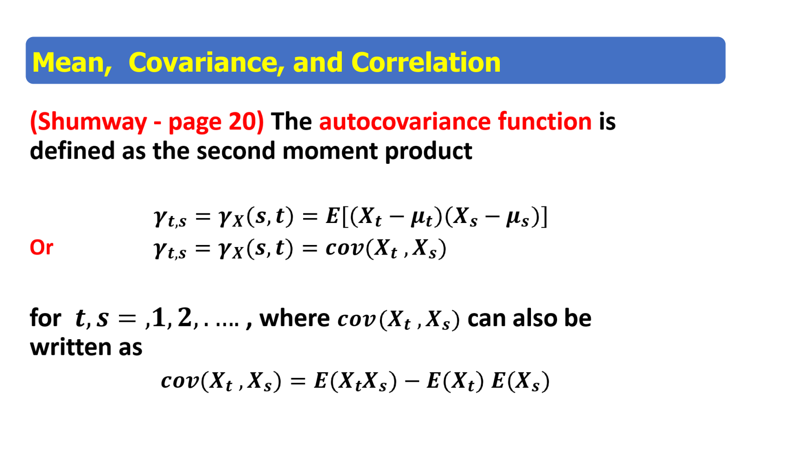


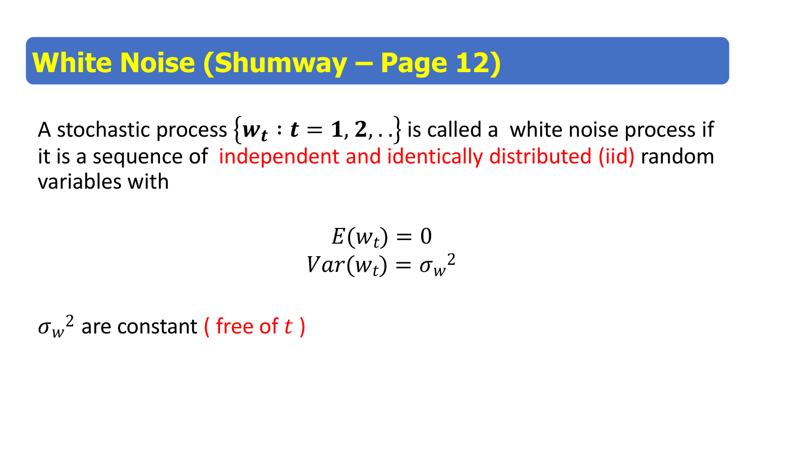


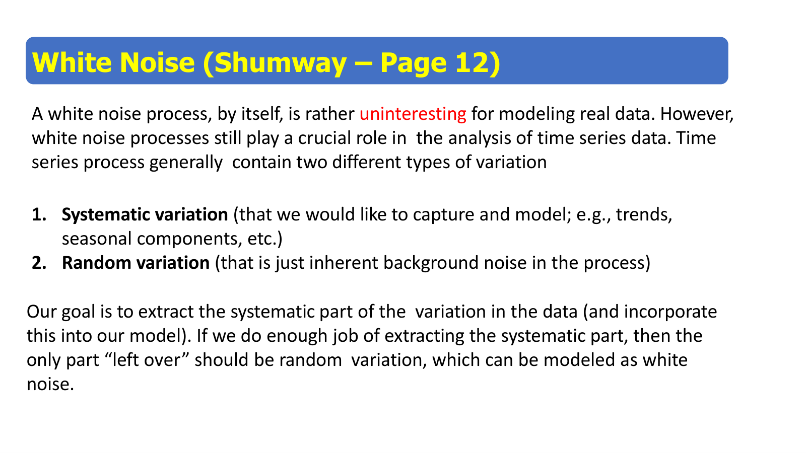
ทักษะที่ออกสอบคือการรับโมเดลที่เขียนด้วย w แล้วหาค่าเฉลี่ยกับ autocovariance ก่อนลงมือต้องแยกให้ออกว่าในสมการมีของสองอย่าง \(w_t\) คือสิ่งที่ใส่เข้าไป เป็นความบังเอิญของวันนั้นซึ่งเรามองไม่เห็น ส่วน \(X_t\) คือผลลัพธ์ที่เราจดได้จริงในวันนั้น ลองนึกถึงร้านไอศกรีม \(w_t\) คือโชคของวันนี้ว่าบังเอิญมีคนเดินผ่านมากหรือน้อย \(X_t\) คือยอดขายที่จดลงสมุด สมการของโมเดลบอกว่ายอดขายวันนี้ผสมโชคของวันไหนบ้างและด้วยน้ำหนักเท่าใด
เมื่อเข้าใจแบบนี้ วิธีหา covariance จะเหลือแค่การนับ ให้มองแต่ละ \(X_t\) เป็นถุงที่ใส่ลูกบอลติดเบอร์ w โดยแต่ละลูกมีน้ำหนักเท่ากับสัมประสิทธิ์ของมัน covariance ของสองถุงได้จากการหาลูกบอลเบอร์เดียวกันที่อยู่ทั้งสองถุง คูณน้ำหนักของสองข้าง คูณ \(\sigma_w^2\) แล้วบวกกันทุกคู่ ลูกที่ไม่มีคู่ให้ทิ้งไปเพราะได้ 0 ตามกฎของ white noise สิ่งที่ต้องระวังคืออย่าเดาแบบแผนเอาเอง ต้องคูณกระจายจริงทุก lag ใน \(x_t=w_{t-1}+2w_t+w_{t+1}\) เมื่อเห็น \(\gamma(0)=6\sigma^2\) กับ \(\gamma(1)=4\sigma^2\) คนมักเดาว่า \(\gamma(2)=2\sigma^2\) แต่ค่าจริงคือ \(\sigma^2\)56 เฉลยเต็มอยู่ใน Lesson 2
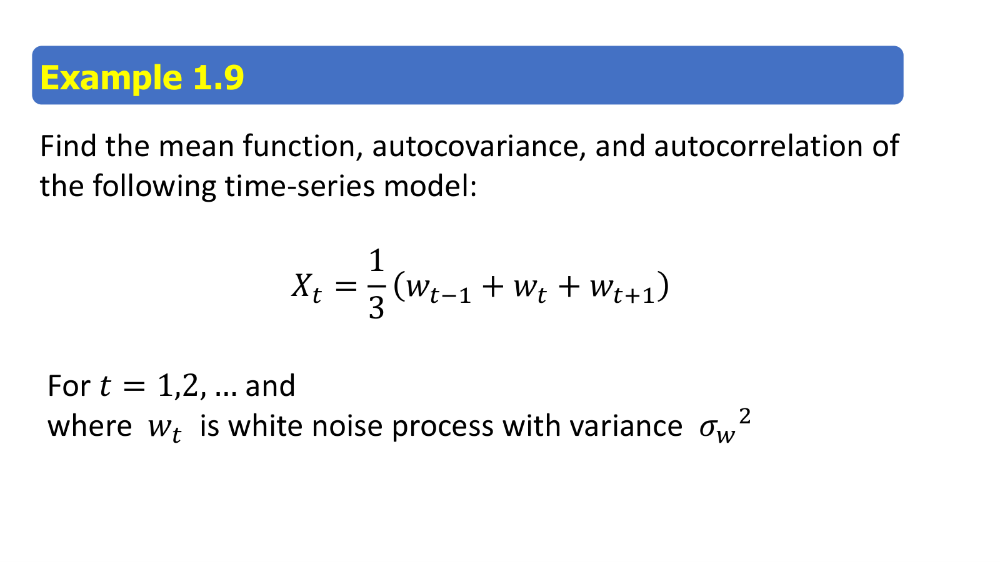
Example 1.9 ให้หา mean function, autocovariance และ autocorrelation ของ \(X_t=\tfrac13(w_{t-1}+w_t+w_{t+1})\) ซึ่งเฉลี่ย white noise สามค่าที่อยู่ติดกัน โมเดลนี้เป็นตัวอย่างแรกของการประกอบ white noise ให้เป็นอนุกรมที่มีความสัมพันธ์ระหว่างจุด และเป็นโจทย์แนวที่จะออกสอบ57
\(E(X_t)=\tfrac13[E(w_{t-1})+E(w_t)+E(w_{t+1})]=\tfrac13(0+0+0)=0\) ทุกเวลา
\(X_t\) มี \(w_{t-1},w_t,w_{t+1}\) และ \(X_{t+h}\) มี \(w_{t+h-1},w_{t+h},w_{t+h+1}\) ทุกลูกมีน้ำหนัก \(\tfrac13\) ลูกที่ตรงกันแต่ละลูกจึงให้ \(\tfrac13\cdot\tfrac13\sigma_w^2=\tfrac19\sigma_w^2\)
ตรงกันครบสามลูก: \(\gamma(0)=\tfrac39\sigma_w^2=\tfrac13\sigma_w^2\)
ถุงแรก t−1, t, t+1 ถุงหลัง t, t+1, t+2 ตรงกันสองลูก: \(\gamma(1)=\tfrac29\sigma_w^2\)
ถุงหลัง t+1, t+2, t+3 ตรงกันลูกเดียว: \(\gamma(2)=\tfrac19\sigma_w^2\)
ถุงหลังเริ่มที่ t+2 ไม่มีลูกตรงกัน: \(\gamma(h)=0\) ค่า h ติดลบให้ผลเท่ากับค่าบวก
หารทุกค่าด้วย \(\gamma(0)=\tfrac39\sigma_w^2\): \(\rho(0)=1\), \(\rho(1)=\tfrac{2/9}{3/9}=\tfrac23\), \(\rho(2)=\tfrac13\), \(\rho(h)=0\) เมื่อ \(|h|\ge3\)
ผลนี้อ่านได้ตรงไปตรงมา ค่าที่ห่างกันหนึ่งช่วงใช้ลูกบอลร่วมกันสองในสามลูก จึงมี correlation 2/3 ค่าที่ห่างกันสองช่วงใช้ร่วมกันลูกเดียว จึงได้ 1/3 ส่วนค่าที่ห่างกันสามช่วงขึ้นไปไม่มีลูกร่วมกันเลย จึงไม่สัมพันธ์กัน เหมือนคนยืนต่อแถวที่แต่ละคนจับมือเพื่อนรอบตัว คนยืนติดกันจับมือคนเดียวกันสองคน คนที่ห่างกันสามตำแหน่งไม่มีมือที่จับร่วมกันเลย ผลทั้งหมดไม่มี t จึงเป็น stationary และ ACF ที่ตัดเป็นศูนย์หลัง lag 2 เป็นลายเซ็นของโมเดลตระกูล moving average ใน Lesson 5 ถ้าจำลองข้อมูล 1,000 จุดใน R จะได้ ACF ที่ lag 1–4 เป็น 0.683, 0.383, 0.030, 0.001 เทียบกับค่าทางทฤษฎี 0.667, 0.333, 0, 0 และได้ความแปรปรวน 0.362 เทียบกับ 1/3 = 0.333 ส่วนต่างที่เหลือมาจากการสุ่ม และจะเล็กลงเมื่อเพิ่มจำนวนจุด
set.seed(2)
w <- rnorm(1002)
x <- stats::filter(w, rep(1/3, 3)) # เฉลี่ยสามค่าติดกัน (ค่าก่อน ค่าปัจจุบัน ค่าถัดไป)
x <- na.omit(x) # ตัดค่าหัวท้ายที่หาไม่ได้
acf(x, lag.max = 4, plot = FALSE)
var(x)stats::filter(w, rep(1/3, 3)) คูณสามค่าที่อยู่ติดกันด้วย 1/3 แล้วรวม โดยค่าเริ่มต้นจัดให้ค่าปัจจุบันอยู่ตรงกลาง จึงตรงกับ \(w_{t-1},w_t,w_{t+1}\)
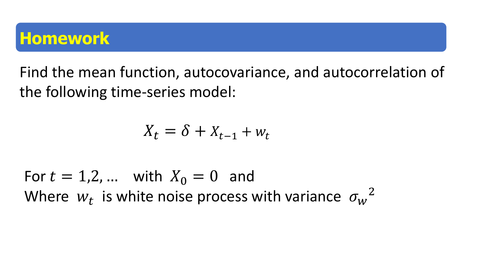
โจทย์การบ้านท้ายสไลด์ให้หาสามค่าเดิมของ \(X_t=\delta+X_{t-1}+w_t\) โดย \(X_0=0\) โมเดลนี้เรียกว่า random walk with drift ค่าวันนี้เท่ากับค่าเมื่อวาน บวกค่าคงที่ \(\delta\) ที่เรียกว่า drift และบวกแรงกระแทกสุ่ม ให้นึกถึงคนเมาที่เดินไปข้างหน้าก้าวละ \(\delta\) แต่เซซ้ายขวาแบบสุ่มทุกก้าว ตำแหน่งปัจจุบันคือผลรวมของทุกก้าว การเซแต่ละครั้งจึงสะสมไปตลอด ข้อนี้คือ Shumway problem 1.8 หน้า 41 ซึ่งต้องใช้ทริกเล็กน้อย58 ความยากอยู่ที่ X อ้างถึงตัวเอง จึงนับลูกบอลตรง ๆ ไม่ได้ ทริกมีสองข้อ ข้อแรก ถ้าคิดไม่ออกให้ไล่เขียนทีละเวลาจนเห็นรูปแบบ59 ข้อสอง ถ้าคิด covariance ไม่ออกให้แทนตัวเลข เช่น s = 2 และ t = 3 แล้วค่อยสรุปเป็นสูตร60
\(X_1=\delta+X_0+w_1=\delta+w_1\)
\(X_2=\delta+X_1+w_2=2\delta+w_1+w_2\)
\(X_3=\delta+X_2+w_3=3\delta+w_1+w_2+w_3\)
\(X_t=t\delta+\sum_{k=1}^{t}w_k\) ต้องแตกเป็นรูปนี้ก่อนจึงทำต่อได้61
\(E(X_t)=t\delta\) ขึ้นกับ t ซึ่งเป็นลักษณะของ random walk เกือบทุกตัว62
\(\gamma(s,t)=\mathrm{cov}\big(\sum_{k=1}^{s}w_k,\ \sum_{k=1}^{t}w_k\big)\) เพราะ \(s\delta\) และ \(t\delta\) ไม่ใช่ตัวแปรสุ่ม เป็นแค่ time indicator63
s = 2, t = 3: ถุง \(\{w_1,w_2\}\) กับ \(\{w_1,w_2,w_3\}\) ตรงกันสองลูก ได้ \(2\sigma_w^2\) s = 3, t = 3 ได้ \(3\sigma_w^2\) s = 2, t = 1 ได้ \(\sigma_w^2\)
จำนวนลูกที่ตรงกันคือเวลาที่น้อยกว่า ปีกกาหลายกรณีจึงเขียนรวมเป็นฟังก์ชันเดียวด้วย min: \(\gamma(s,t)=\min\{s,t\}\,\sigma_w^2\)64
\(\rho(s,t)=\dfrac{\min\{s,t\}\sigma_w^2}{\sqrt{s\sigma_w^2}\sqrt{t\sigma_w^2}}=\dfrac{\min\{s,t\}}{\sqrt{st}}\)
ขั้นสุดท้ายมีจุดที่ต้องระวัง เฉลยบนกระดานในคลิปเขียนผลเป็น \(\min\{s,t\}\sigma^2/\sqrt{ts}\) ซึ่งยังเหลือ \(\sigma^2\) อยู่65 แต่ตัวหารที่ถูกคือ \(\sqrt{t\sigma^2}\sqrt{s\sigma^2}=\sigma^2\sqrt{ts}\) σ² จึงตัดกันหมด คำตอบที่ถูกคือ \(\min\{s,t\}/\sqrt{st}\) ซึ่งไม่มีหน่วยและอยู่ระหว่าง 0 ถึง 1 ตามที่ correlation ควรเป็น และถ้าโจทย์ถาม autocorrelation function ต้องแปลงต่อจาก autocovariance เสมอ66 ลองแทนตัวเลขดู ที่ s = 4, t = 5 ได้ \(\rho=4/\sqrt{20}=0.894\) แต่ที่ s = 100, t = 101 ได้ \(100/\sqrt{10100}=0.995\) ยิ่งเวลาผ่านไป ค่าที่อยู่ติดกันยิ่งสัมพันธ์กันสูง เพราะทั้งสองมีแรงกระแทกสะสมชุดเดียวกันเกือบทั้งหมด และความแปรปรวน \(t\sigma_w^2\) ที่โตเป็นเส้นตรงก็คือก้อนการแจกแจงที่กว้างขึ้นเรื่อย ๆ ในสไลด์หน้า 32 เมื่อจำลอง random walk ที่ drift 0.2 จำนวน 5,000 รอบใน R ค่าเฉลี่ยที่ t = 50 ได้ 9.95 เทียบกับทฤษฎี 10 ความแปรปรวนที่ t = 10 และ 50 ได้ 9.91 และ 49.99 เทียบกับ 10 และ 50 และ \(\rho(10,20)\) ได้ 0.699 เทียบกับ 0.707 การจำลองแบบนี้คือเหตุผลที่วิชาสอน simulation คือใช้ศึกษาว่าแต่ละโมเดลมีหน้าตาอย่างไร67
set.seed(4)
R <- replicate(5000, cumsum(0.2 + rnorm(50))) # drift 0.2, sigma = 1, 50 จุด ทำ 5000 รอบ
mean(R[50, ]); var(R[10, ]); var(R[50, ])
cor(R[10, ], R[20, ]) # rho(10, 20)mean t=50 = 9.95 ทฤษฎี tδ = 50(0.2) = 10 var t=10 = 9.91 ทฤษฎี tσ² = 10 var t=50 = 49.99 ทฤษฎี 50 cor(10,20) = 0.699 ทฤษฎี min(10,20)/sqrt(10·20) = 0.707
cumsum(0.2 + rnorm(50)) สร้าง random walk ตามรูปทั่วไปในขั้นที่ 2 คือผลรวมสะสมของ δ + w และ replicate ทำซ้ำ 5,000 ครั้ง แถวที่ 10 จึงเป็นค่า \(X_{10}\) จาก 5,000 เส้นทาง
ทำไมต้องหาสูตรเหล่านี้ทั้งที่ข้อมูลจริงไม่ได้บอกว่ามาจากโมเดลอะไร คำตอบคือถ้ารู้ว่าแต่ละโมเดลควรมี autocorrelation หน้าตาแบบไหน เมื่อเจอข้อมูลที่ autocorrelation คล้ายกับสูตรของโมเดลใด ก็ตรวจได้ว่าน่าจะเป็นโมเดลนั้น68 สองโจทย์ในตอนนี้ใช้เทคนิคเดียวกันแต่ให้ผลตรงข้าม Example 1.9 มีค่าเฉลี่ย 0 ความแปรปรวน \(\tfrac13\sigma_w^2\) และ autocovariance ที่ขึ้นกับระยะห่างอย่างเดียว แรงกระแทกหนึ่งครั้งอยู่ได้สามช่วงเวลาแล้วหมดไป จึง stationary ส่วน random walk มีค่าเฉลี่ย \(t\delta\) ความแปรปรวน \(t\sigma_w^2\) และ autocovariance ที่ขึ้นกับเวลา แรงกระแทกสะสมถาวร จึงไม่ stationary ทั้งสองจึงเป็นคู่เปรียบเทียบที่ดีของเรื่อง stationarity ใน Lesson 2 และวิธีทำให้ random walk นิ่งคือการทำผลต่าง \(X_t-X_{t-1}=\delta+w_t\) ซึ่งเหลือแค่ค่าคงที่บวก white noise สอนใน Lesson 3
หน้าแบบฝึกมีข้อสอบปลายภาคปีก่อน ๆ ที่ออกจากบทนี้พร้อมแม่แบบคำตอบ ลองฝึกต่อในแบบฝึก Lesson 1 (16 ข้อ) หรืออ่านต่อ Lesson 2 — การวัดความแม่นยำของการพยากรณ์ และ stationarity
ตัวเลขยกในเนื้อหาชี้มาที่รายการนี้ แต่ละรายการระบุคลาสและนาทีของคลิป พร้อมถ้อยคำในคลิปเมื่อมี
| หน้า | เนื้อหา | อยู่ในตอน |
|---|---|---|
| 1 | ปก Basic Knowledge | etc — ปก |
| 2–8 | นิยาม, cross-sectional, univariate, โครงสร้างข้อมูล, S&P 500, objectives | ตอน 1 |
| 9 | หน้าคั่น Time-series components | etc — หน้าคั่น |
| 10–24 | Trend, Seasonality, Cycle, Irregular, variance, decomposition, Airline, Milk, Temperature | ตอน 2 |
| 25 | หน้าคั่น Time Series and Stochastic Process | etc — หน้าคั่น |
| 26–34 | Random variable, E, Var, Cov, stochastic process, moments | ตอน 3 |
| 35–44 | Mean function, autocovariance, ACF, white noise | ตอน 4 |
| 45–46 | Example 1.9 และ Homework random walk with drift | ตอน 5 |
คลิปที่ใช้: Class 1 ทั้งคลิป (ตอน 1–2, 4), Class 2 ช่วง 0:00–0:40 ทบทวนสถิติ และ 1:16–1:28 white noise (ตอน 3–5), Class 3 ช่วง 0:00–0:21 เฉลย random walk with drift และ 0:51–0:56 white noise ใน R (ตอน 4–5)